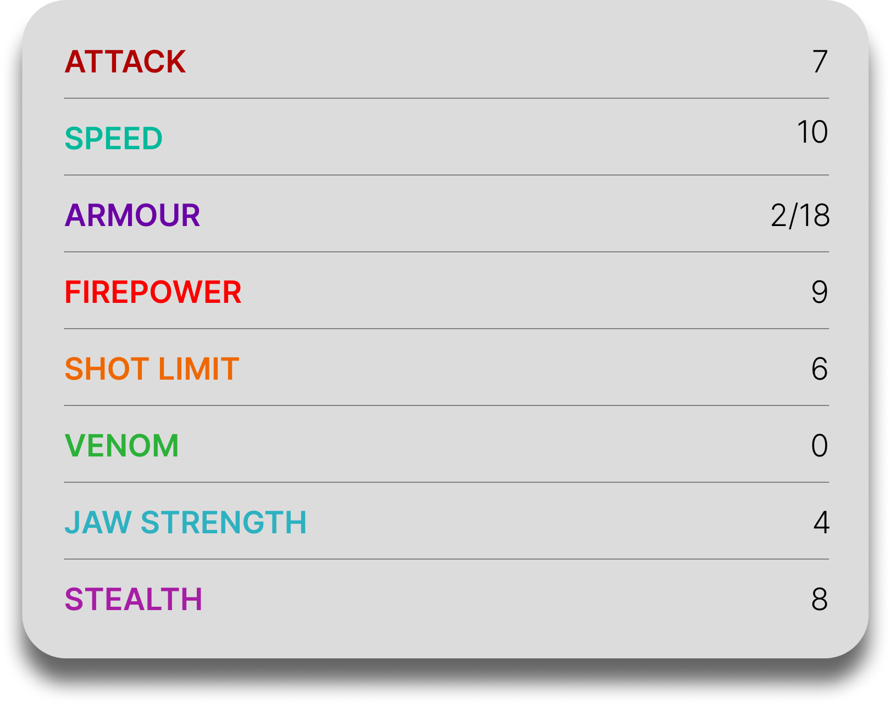

Boneknapper
General Overview
The Boneknapper is a large dragon belonging to the Mystery Class. It is best known for its unusual behavior of collecting bones from dead dragons to build a protective outer armor. Despite its fearsome appearance when fully covered, the Boneknapper is actually fragile underneath, relying heavily on its bone armor for both defense and survival.

Physical Appearance
- Body & Color: Its true body is pale, soft, and scaleless, making it highly vulnerable without its external bone armor.
- Head & Face: It has a narrow head with expressive eyes and sharp teeth, often partially hidden beneath skull fragments.
- Appendages: It has long limbs and claws used to gather and assemble bones into its protective shell.
- Wings & Tail: Its wings are relatively standard in shape, while its tail may be reinforced with bone pieces depending on its current armor.
Abilities and Combat
- Bone Armor: It collects and assembles bones from dead dragons to create a strong, customizable protective layer.
- Adaptive Defense: Its armor can change depending on the bones it finds, making each Boneknapper visually unique.
- Fire Breath: It can breathe fire like many dragons, though its offensive capabilities rely more on intimidation and protection.
- Resourcefulness: It uses its surroundings efficiently, scavenging bones to repair or improve its armor.
- Physical Strength: When armored, it becomes much stronger and more resistant to attacks.
- Intimidation: Its skeletal appearance can scare both humans and dragons, giving it a psychological advantage.
Behavior and Personality
- Intelligence: It is clever and highly resourceful, especially when gathering and assembling bones.
- Temperament: Boneknappers can be aggressive when protecting their armor or searching for specific bones.
- Behavior: They are scavengers, often found in dragon graveyards where bones are abundant.
- Social Traits: They are mostly solitary and focused on their own survival rather than social interaction.
- Obsession: They may become fixated on obtaining a specific bone to complete their armor or improve their abilities.